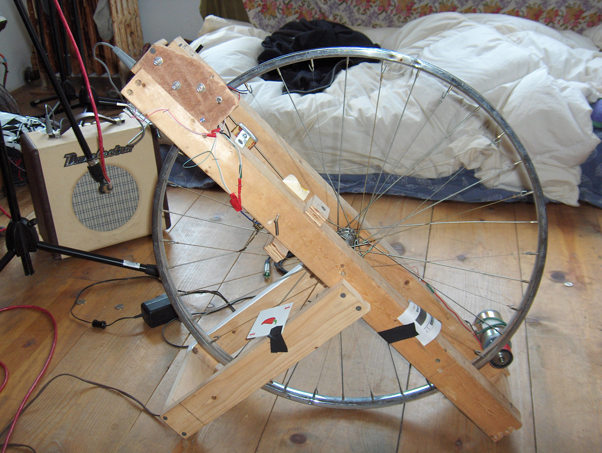

people doing strange things with electricity
The e-th dorkbot-nyc meeting took place on Wednesday, September 6th, 2006, at 7pm at Location One in SoHo.
It featured the fragrant and marvellous:

Bret Doar: Huffyphonic Gyrobanshee 1000
Presenting the Huffyphonic Gyrobanshee 1000 a mechanized bicycle wheel/guitar hybrid instrument, plus other mechanical marvels.
http://www.kingvolcano.com
http://homepage.mac.com/kingvolcano
Jon Lippincott: Vis Virtual Universe
Vis is a virtual universe written from the ground up in C++. It has become the a means of creative expression for its author, who has used it for live performances at art spaces and nightclubs in NYC. It is a relatively young project (less than a year), and has a number of potential paths of evolution, the most likely being some kind of online space where users can create their own worlds and communicate with one another in unique ways.
http://www.jonlippincott.com
David Kareve: horrified robot art
David Karave creates horrified robot art. "Home Automation" is a combination of cinema, theatre and violent robotics. A family of crash test dummies, in a walk-in living room, react to the terror color code alerts on their television, by violently & musically smashing into themselves. His work will be on display at the Edward Albee foundation, 91 Fairview Ave, Montauk, NY, September 24-30th.
http://www.crashingart.com
Some images from the meeging here: 06.sept.2006